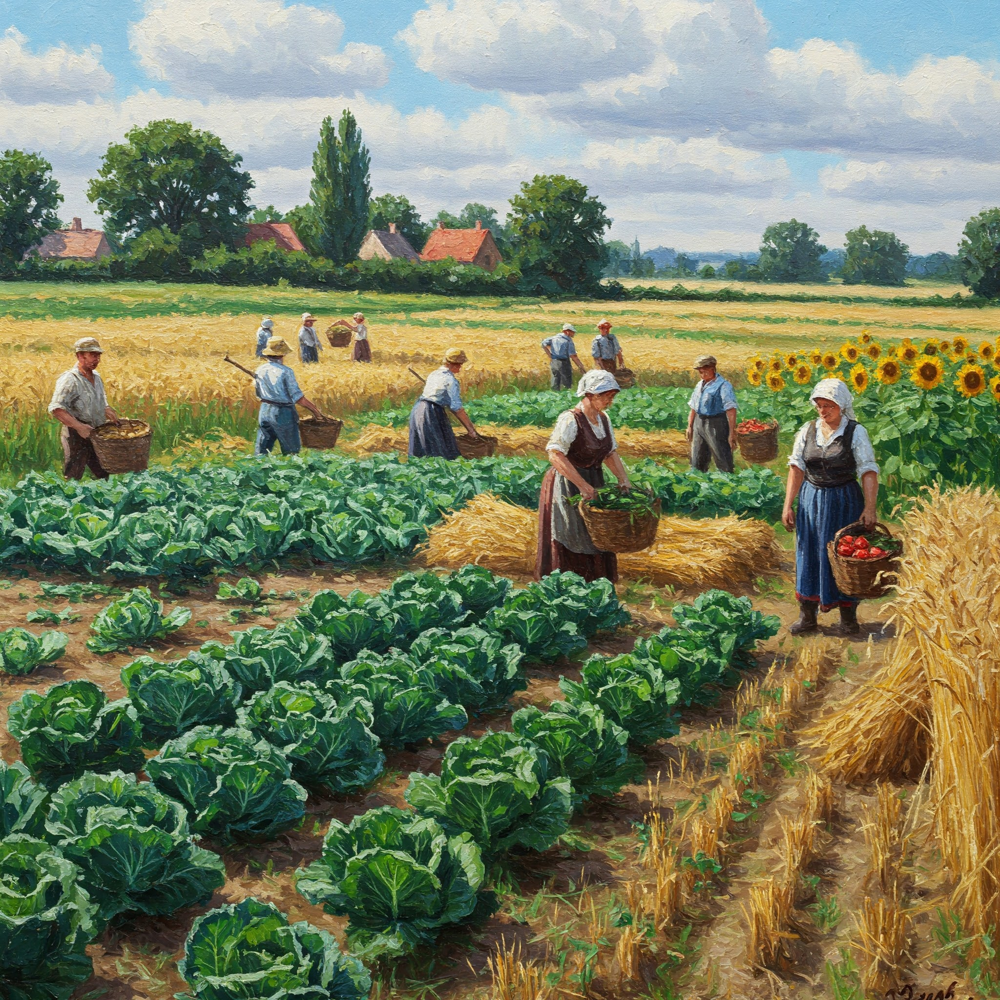
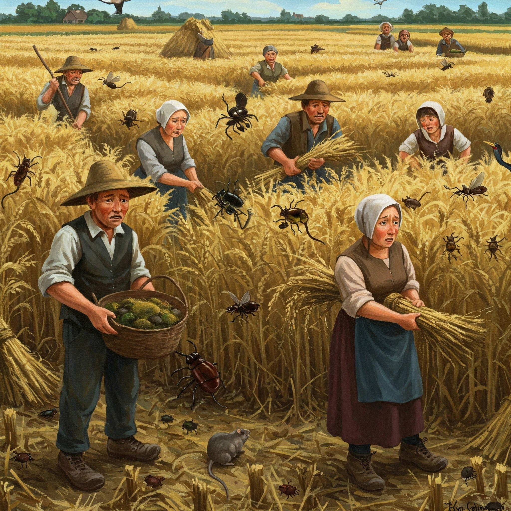
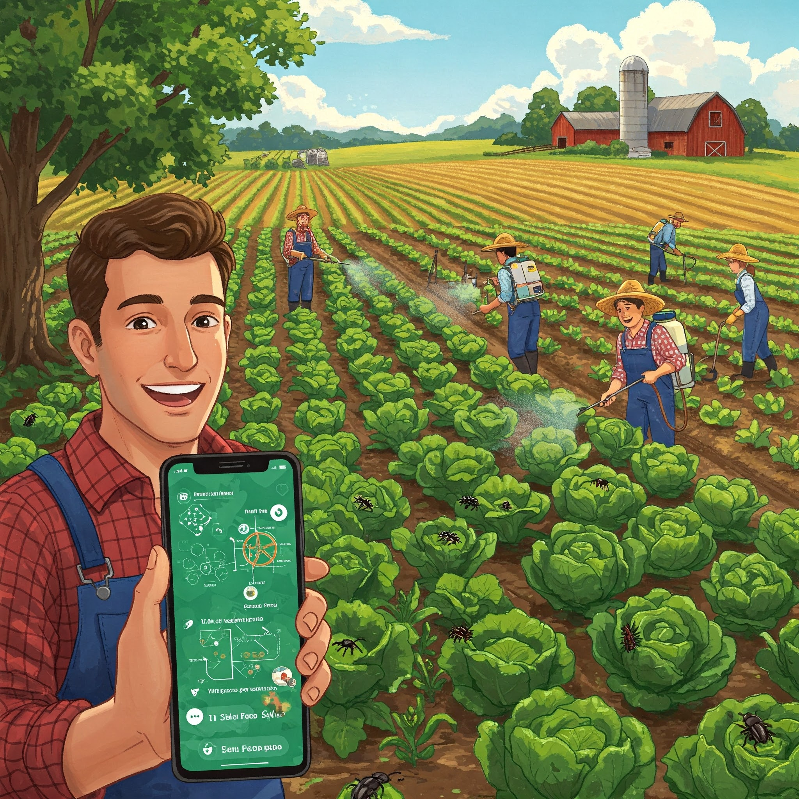

AI algoriculture application

lands full of peace and love

Pests making the people worried

After useing proper AI-boosted app
Things we can help
We mainly focus on pest control, irrigation, and selection of suitable crops in agricultural production. We want to maximize the profit and minimize the effort in daily agricultural work.
- AI farms can provide consumers with green, pollution-free, traceable agricultural products with the help of advanced sensors and monitoring technologies, meeting the market demand for high-quality agricultural products.
- Population growth has also driven the overall demand for food and agricultural products.
- AI farms have alleviated the pressure on agricultural product supply to a certain extent by improving production efficiency.